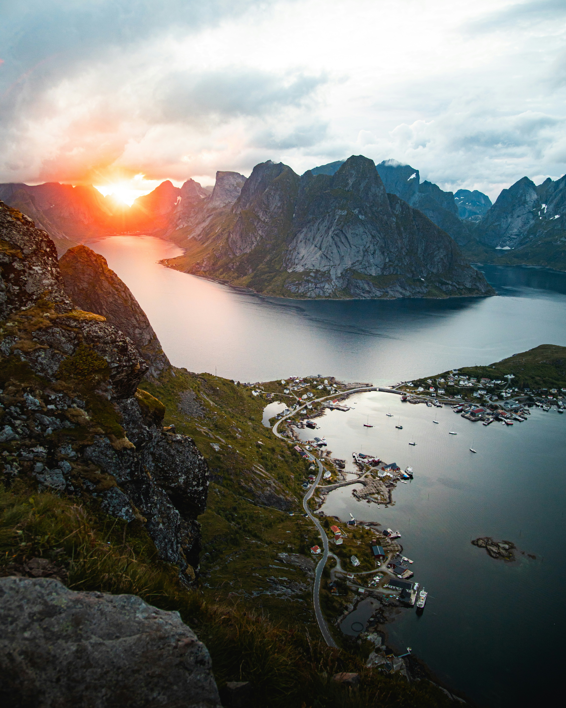
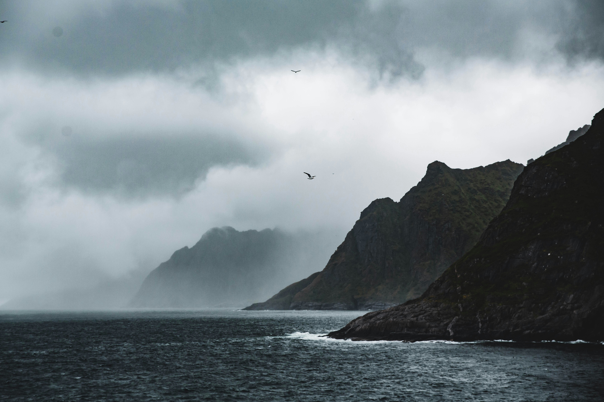
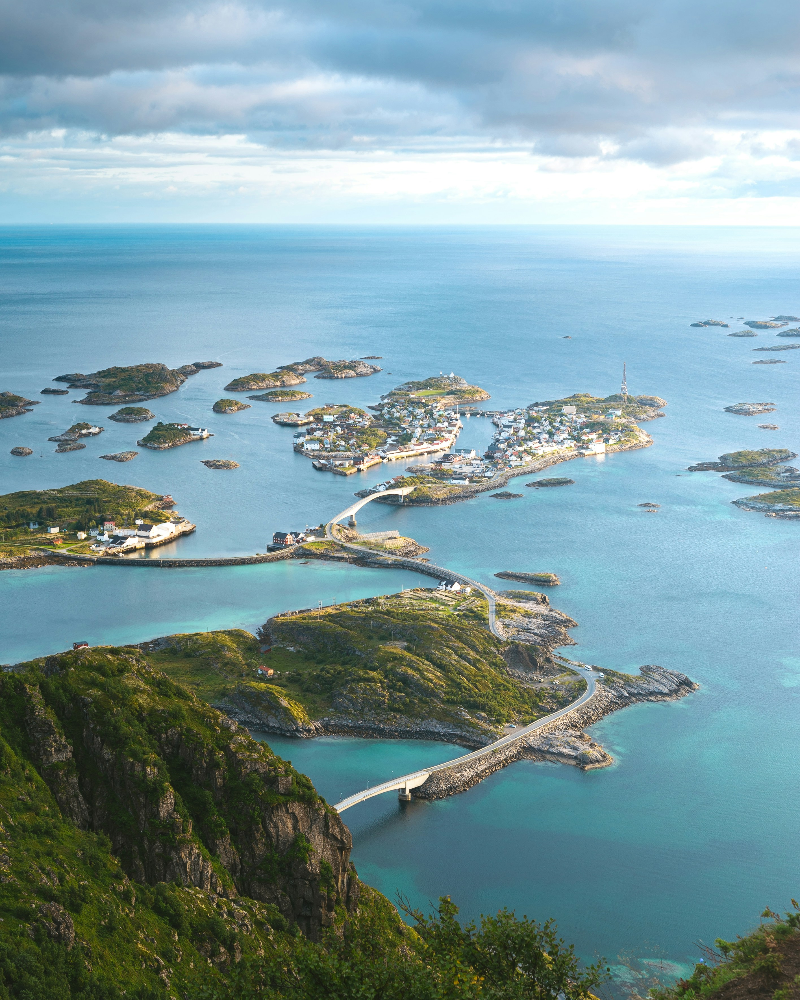

Fiordy, namiot, plecak i surowa szkoła przetrwania na Północy
Norwegia to był zupełnie inny rozdział – moja w pełni samodzielna podróż urodzinowa bez rodziców. Samolot, plecak z dokumentami, nawigacja i namiot. Ostateczny test dojrzałości, charakteru i ogarnięcia w obcym, wymagającym środowisku, gdzie człowiek zostaje sam na sam ze swoimi myślami i bezkresną naturą.


Podczas przemierzania surowego płaskowyżu, gdzie w promieniu wielu kilometrów nie było żywej duszy, doszło do sytuacji, która mogła skończyć się tragicznie. W trakcie gwałtownego załamania pogody – ulewy i lodowatego wiatru – zorientowałem się, że w kieszeni plecaka brakuje wodoodpornego etui z mapą i powerbankiem. Zgubiłem je gdzieś na trasie przedzierając się przez gęste, mokradłowe zarośla.
Adrenalina skoczyła natychmiast. Zostawiłem ciężki plecak pod osłoną skały i zacząłem biec z powrotem w deszczu. Po godzinie gorączkowych poszukiwań, klęcząc w błocie i odgarniając mchy, zauważyłem ciemny zarys materiału. Ten moment uświadomił mi brutalną prawdę o survivalu: w naturze jeden błąd może kosztować cię wszystko.
Widok norweskich fiordów i tysięcy wysepek zapiera dech w piersiach. Wędrowałem przez góry i lasy, rozkładając namiot nad wodospadami oraz na piaszczystych plażach Północy. Samotne szwendanie się po bezdrożach uczyło pokory i pokazało mi, że prawdziwy spokój odnajduje się tylko tam, gdzie kończy się cywilizacja.
